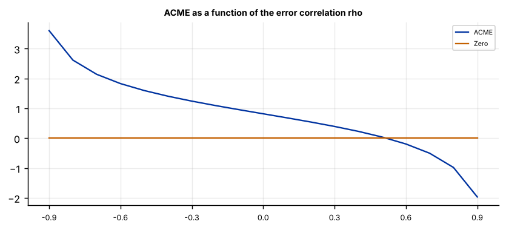

Run this model on your own data in Open Econometric Systems →
Step 1The question and the assumptions
How much of the effect runs through the mediator? With treatment \(T\), mediator \(M\), outcome \(Y\) and covariates \(X\), estimate
The average causal mediation effect is \(a\,b\), the average direct effect is \(c'\), and they add up to the total effect. If the effect of the mediator may depend on treatment, an interaction \(\kappa\,TM\) is added to the outcome model and the effects are reported for each treatment arm. The estimates are causal under sequential ignorability: the treatment is ignorable given \(X\), and the mediator is ignorable given \(T\) and \(X\). Randomising \(T\) secures the first condition but not the second, because people choose or are selected into the mediator. The sensitivity analysis asks how large the correlation \(\rho\) between \(\varepsilon_1\) and \(\varepsilon_2\), a proxy for an omitted common cause, would have to be for the ACME to be zero.
Three checks before you report a mediation analysis
- Is the treatment randomised or ignorable? If not, neither the total effect nor the split is causal.
- Could something unmeasured drive both the mediator and the outcome? Report the sensitivity analysis, and say in words what such a variable might be.
- Is the mediator measured before the outcome? A mediator measured at the same time as the outcome, or a component of it, makes the indirect effect partly mechanical.
How to write it: the model
We ask how much of the earnings effect of the National Supported Work job-training programme works through employment. The treatment is random assignment to training, the mediator is an indicator for any employment in 1978, and the outcome is earnings in 1978, in thousands of dollars. Mediator and outcome models are linear and include age, education, race, marital status, degree status and earnings in 1974 and 1975. We report the average causal mediation effect, the average direct effect and the total effect with percentile confidence intervals from 500 bootstrap resamples, and a sensitivity analysis for violations of sequential ignorability (Imai, Keele and Yamamoto 2010).
Step 2Load the data and look at the mediator
import numpy as np
import pandas as pd
import oes_engine as oes # pip install -e open-econometric-systems/oes-engine
data = open("nsw_mediation.csv").read()
df = pd.read_csv("nsw_mediation.csv")
covs = ["age", "educ", "black", "hisp", "married", "nodegree", "re74", "re75"]
print(len(df), "workers;", int(df.train.sum()), "treated")
print(df.groupby("train")[["employed78", "re78"]].mean().round(3))
print("mean earnings by employment in 1978:", df.groupby("employed78").re78.mean().round(2).to_dict())445 workers; 185 treated
employed78 re78
train
0 0.646 4.555
1 0.757 6.349
mean earnings by employment in 1978: {0: 0.0, 1: 7.66}How to read it
In 1978, 75.7% of the workers assigned to training had a job, against 64.6% of the controls, an increase of 11 percentage points, and their mean earnings were 6.35 against 4.55 (thousand dollars). Workers without a job in 1978 have earnings of exactly zero, and those with a job earn 7.66 on average. Employment is therefore the extensive margin of earnings, not an independent variable measured earlier, so the mediated effect in this example is partly an accounting split of the earnings gain into getting a job and earning more once employed. The example illustrates the method, and the warning that a mediator measured at the same time as the outcome gives a partly mechanical result.
Step 3Estimate the effects
spec = dict(outcome="re78", treat="train", mediator="employed78", covariates=covs, boot=500)
r = oes.run("mediation", data, spec)
oes.summary(r)
oes.show(r, "Mediation of")
oes.show(r, "Path coefficients")Observations: 445
ACME: 0.8183
ADE: 0.858
Total effect: 1.6763
Proportion mediated: 0.488
rho at which ACME = 0: 0.519
Mediation of the effect of train on re78 through employed78
Estimate Boot. s.e. 95% CI low 95% CI high Boot. p-value
Effect
ACME (average mediation effect) 0.8183 0.3243 0.2315 1.4665 0.008
ADE (average direct effect) 0.8580 0.5486 -0.2019 2.0134 0.132
Total effect 1.6763 0.6359 0.4757 3.0470 0.004
Proportion mediated (ACME / total) 0.4882 0.9726 0.1546 1.3250
Note: Linear models for the mediator and the outcome; percentile intervals from 500 bootstrap resamples. The proportion mediated is unstable when the total effect is near zero.
Path coefficients
Coefficient
Path
train -> employed78 (a) 0.1103
employed78 -> re78, holding treatment fixed (b) 7.4225
train -> re78, holding the mediator fixed (c') 0.8580How to read it
The total effect of 1.676 splits into a mediated part of 0.818 (95% bootstrap interval 0.23 to 1.47, p = 0.008) and a direct part of 0.858 (interval -0.20 to 2.01, p = 0.13), so about half of the effect runs through employment (proportion mediated 0.49), although the interval for the proportion is wide (0.15 to 1.33). The path coefficients explain the split: training raises the probability of working by 0.110, and a worker with a job earns 7.42 more (thousand dollars) than one without, holding treatment fixed, so the product is 0.82. Only the mediated part is distinguishable from zero. The direct part, the additional earnings among those employed, is positive but too imprecise to separate from zero.
Step 4Sensitivity to an unmeasured confounder of mediator and outcome
oes.show(r, "Sensitivity")
oes.plot(r, "ACME as a function", ncols=1, size=(6.5, 3))Sensitivity of the ACME to correlation between the mediator and outcome errors
ACME at that rho
rho
-0.9 3.6043
-0.8 2.6174
-0.7 2.1409
-0.6 1.8303
-0.5 1.5974
-0.4 1.4072
-0.3 1.2427
-0.2 1.0938
-0.1 0.9540
0.0 0.8183
0.1 0.6827
0.2 0.5429
0.3 0.3940
0.4 0.2295
0.5 0.0393
0.6 -0.1936
0.7 -0.5043
0.8 -0.9807
0.9 -1.9676
Note: At rho = 0 the estimate relies on sequential ignorability (no unmeasured confounder of the mediator-outcome relationship, given treatment and covariates). The ACME is zero at rho = 0.519. The no-interaction ACME formula is used here.
How to read it
At rho = 0 the ACME is 0.818, and it falls to zero at rho = 0.519: if an unmeasured factor made the errors of the employment and earnings equations correlated at about 0.52, there would be no mediated effect. A positive correlation is what omitted motivation or ability would produce, since it raises both the chance of working and earnings, so the estimate at rho = 0 is more likely to be too large than too small, and negative values of rho (where the ACME is larger) are harder to motivate. A correlation of 0.5 is large, but it is the kind of value that a strong unobserved trait could produce, so the conclusion that employment mediates part of the effect should be stated with the sensitivity threshold alongside it.
Step 5Does the effect of the mediator depend on treatment?
ri = oes.run("mediation", data, dict(spec, interaction="yes"))
oes.show(ri, "Mediation of")
oes.show(ri, "Path coefficients")Mediation of the effect of train on re78 through employed78
Estimate Boot. s.e. 95% CI low 95% CI high Boot. p-value
Effect
ACME, control (t = 0) 0.7706 0.3101 0.2171 1.3903 0.008
ACME, treated (t = 1) 0.9022 0.3635 0.2461 1.6092 0.008
ADE, control (t = 0) 0.7813 0.5053 -0.1976 1.7881 0.14
ADE, treated (t = 1) 0.9129 0.5805 -0.2075 2.1306 0.132
ACME (average mediation effect) 0.8364 0.3339 0.2340 1.4925 0.008
ADE (average direct effect) 0.8471 0.5418 -0.2023 1.9724 0.128
Total effect 1.6835 0.6403 0.4779 3.0647 0.004
Proportion mediated (ACME / total) 0.4968 0.9574 0.1595 1.3352
Note: Linear models for the mediator and the outcome with a treatment-by-mediator interaction; percentile intervals from 500 bootstrap resamples. The proportion mediated is unstable when the total effect is near zero.
Path coefficients
Coefficient
Path
train -> employed78 (a) 0.1103
employed78 -> re78, holding treatment fixed (b) 6.9896
train -> re78, holding the mediator fixed (c') 0.0098
Treatment-by-mediator interaction 1.1936How to read it
With the interaction, the effect of having a job on earnings is 6.99 for the control group and 8.18 for the treated (interaction 1.19). The ACME is 0.771 in the control state and 0.902 in the treated state, and the ADE is 0.781 and 0.913. Averaged over the two, they are 0.836 and 0.847, within 0.03 of the model without an interaction, so the interaction does not change the split. The coefficient on treatment in the interaction model (0.010) is the effect of training for a worker with no job, whose earnings are zero by construction, and it should not be read as the direct effect.
Step 6Robustness to covariates
out = {}
for name, cv in {"all covariates": covs, "no covariates": [], "demographics only": ["age", "educ", "black", "hisp", "married", "nodegree"], "earnings history only": ["re74", "re75"]}.items():
rr = oes.run("mediation", data, dict(spec, covariates=cv, boot=200))
rows = {x[0][:4]: x for x in rr["tables"][0]["rows"]}
out[name] = [rows["ACME"][1], rows["ADE "][1], rows["Tota"][1], rows["Prop"][1], [s["value"] for s in rr["summary"] if s["label"].startswith("rho")][0]]
print(pd.DataFrame(out, index=["ACME", "ADE", "total", "proportion mediated", "rho* (ACME = 0)"]).T.round(3))ACME ADE total proportion mediated rho* (ACME = 0) all covariates 0.818 0.858 1.676 0.488 0.519 no covariates 0.834 0.961 1.794 0.465 0.526 demographics only 0.831 0.840 1.671 0.497 0.521 earnings history only 0.810 0.962 1.773 0.457 0.523
How to read it
The split is stable across covariate sets: the ACME is between 0.81 and 0.83, the ADE between 0.84 and 0.96, the total effect between 1.67 and 1.79, the proportion mediated between 0.46 and 0.50, and the sensitivity threshold between 0.52 and 0.53. Treatment is randomised, so the covariates matter little for the total effect, and in this sample they predict the mediator and outcome weakly, which is why the estimates hardly move. Robustness to covariates is not robustness to an unmeasured confounder of the mediator and the outcome, which only the sensitivity analysis addresses.
Step 7Write the results
How to write it: results
Random assignment to training raises earnings in 1978 by 1.68 thousand dollars (bootstrap 95% interval 0.48 to 3.05). We estimate that 0.82 (0.23 to 1.47) of this runs through employment and 0.86 (-0.20 to 2.01) is a direct effect, so about half of the effect (0.49, interval 0.15 to 1.33) is mediated. The result is insensitive to the covariate set and to allowing the earnings effect of employment to differ by treatment (ACME 0.84, ADE 0.85). It relies on the assumption that no unmeasured factor affects both employment and earnings given the covariates; the mediated effect would be zero if the errors of the employment and earnings equations were correlated at 0.52. Employment and earnings are measured in the same year and workers without a job have zero earnings, so the mediated effect partly reflects how earnings are defined, and we interpret the split as the contribution of the extensive margin.
| Report | What | Where |
|---|---|---|
| Design | Treatment, mediator, outcome, assumptions | Step 1 |
| Data | Effect of treatment on the mediator and outcome | Step 2 |
| Effects | ACME, ADE, total, proportion mediated | Step 3 |
| Sensitivity | Error correlation at which the ACME vanishes | Step 4 |
| Interaction | Effects by treatment arm | Step 5 |
| Robustness | Covariate sets | Step 6 |
References. Baron, R. and Kenny, D. (1986), "The Moderator-Mediator Variable Distinction in Social Psychological Research," Journal of Personality and Social Psychology 51. Imai, K., Keele, L. and Tingley, D. (2010), "A General Approach to Causal Mediation Analysis," Psychological Methods 15. Imai, K., Keele, L. and Yamamoto, T. (2010), "Identification, Inference and Sensitivity Analysis for Causal Mediation Effects," Statistical Science 25. Pearl, J. (2001), "Direct and Indirect Effects," Proceedings of the 17th Conference on Uncertainty in Artificial Intelligence. Heckman, J. and Pinto, R. (2015), "Econometric Mediation Analyses," Econometric Reviews 34.